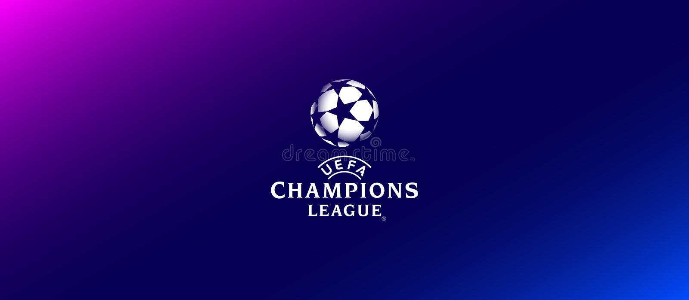
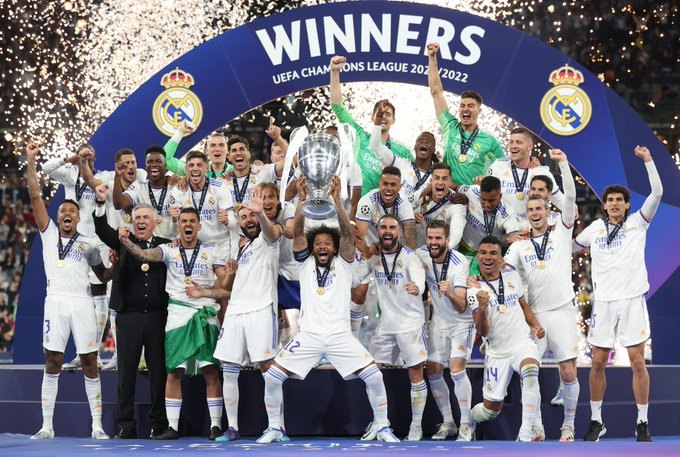
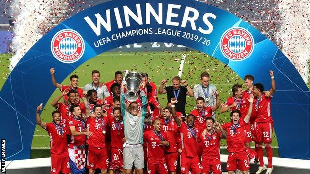
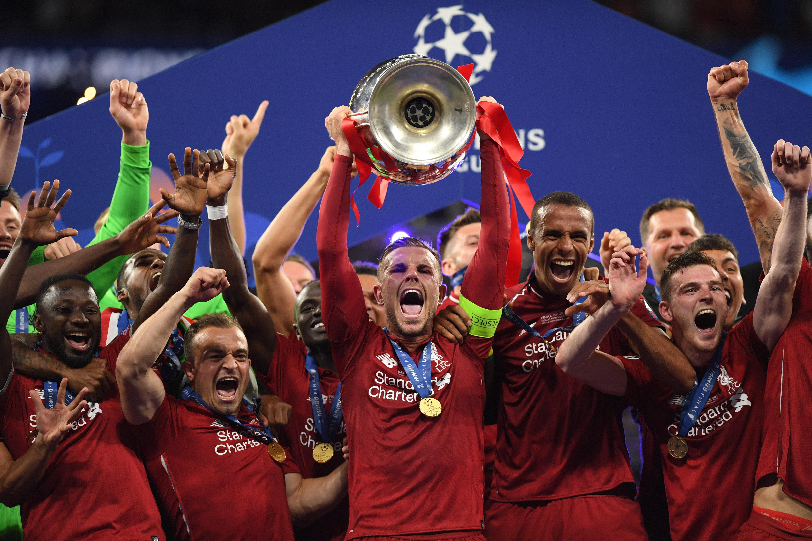
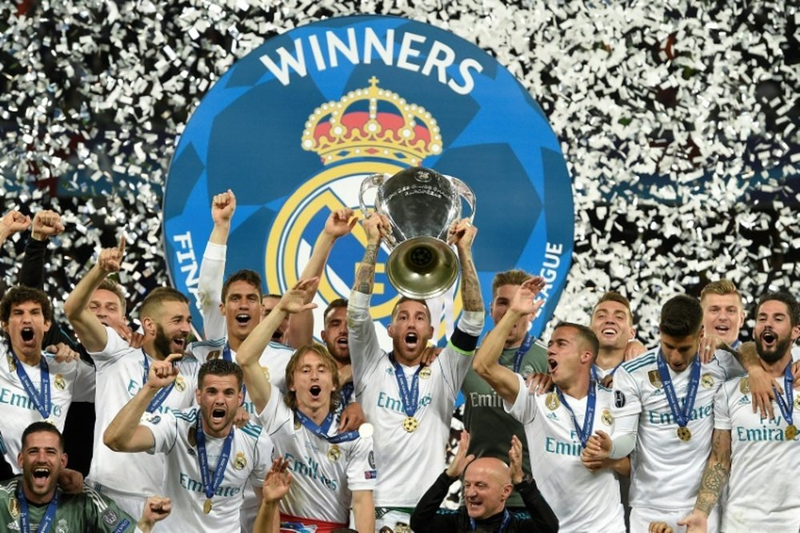

Tables are a powerful feature for organizing content(images,blocks of text,video clips,buttons,etc) on
a web page, thus defining the overall layout of the page!

|  |
 |
 |
 |
 |
| 21-22 Season: Real Madrid |
20-21 Season: Chelsea |
19-20 Season: Bayern Munich |
18-19 Season: Liverpool |
17-18 Season: Real Madrid |
|
|
The UEFA Champions League (abbreviated as UCL) is an annual club football competition organised by the Union of European Football Associations (UEFA) and contested by top-division European clubs,
deciding the competition winners through a round robin group stage to qualify for a double-legged knockout format,
and a single leg final.It is one of the most prestigious football tournaments in the world and the most prestigious club competition in European football,
played by the national league champions (and, for some nations, one or more runners-up) of their national associations.
In its present format, the Champions League begins in late June with a preliminary round, three qualifying rounds and a play-off round,
all played over two legs. The six surviving teams enter the group stage,
joining 26 teams qualified in advance.
The 32 teams are drawn into eight groups of four teams and play each other in a double round-robin system.
The eight group winners and eight runners-up proceed to the knockout phase that culminates with the final match in late May or early June.
The winner of the Champions League qualifies for the following year's Champions League, the UEFA Super Cup, and the FIFA Club World Cup. |